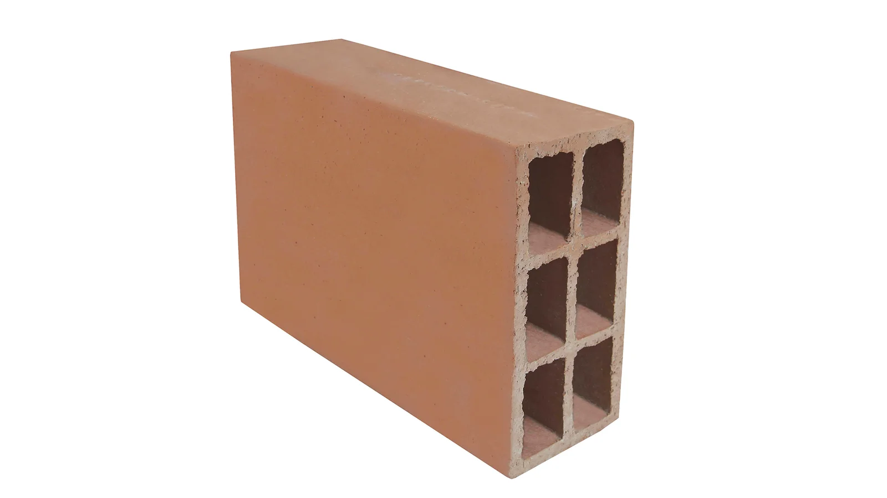
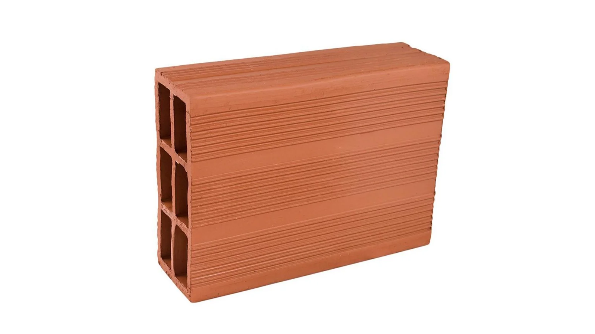
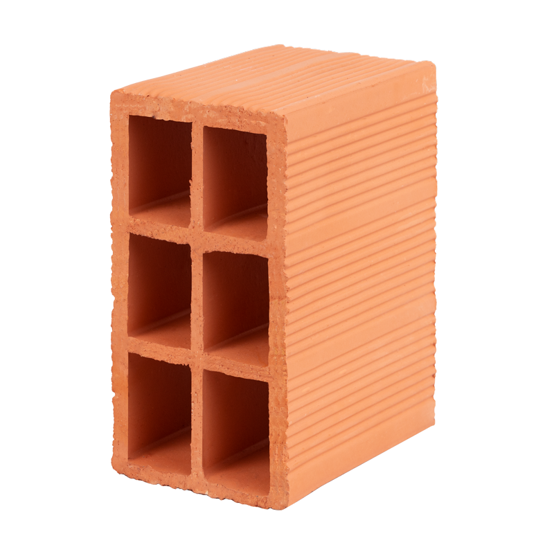

Historia de python
Guido Van Rossum, un programador de computación de los Países Bajos, creó Python. Python comenzó en 1989 en el Centrum Wiskunde & Informatica (CWI), en principio como un proyecto de afición para mantenerse ocupado durante las vacaciones de Navidad. El nombre del lenguaje se inspiró en el programa de televisión de la BBC “Monty Python’s Flying Circus” debido a que Guido Van Rossum era un gran aficionado del programa.
Nuestros productos

Bloque # 4

Bloque # 5

Medios